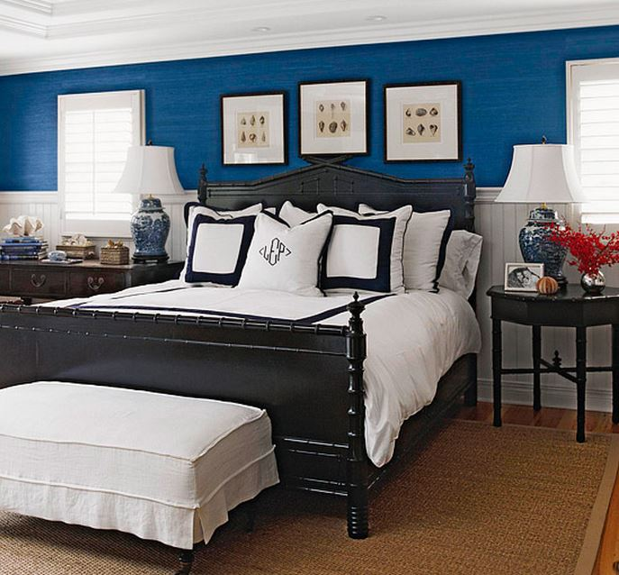

.png)
.PNG)
.PNG)
.PNG)
.PNG)
.PNG)
.JPG)
.JPG)
.PNG)
.PNG)


Happy three-day-weekend to all of you! I hope you are enjoying this January holiday weekend. 🙂 This time last week I was walking into our local bakery hoping to find a few sweets with a bit of red icing on them. In the crazy days of getting ready for the week’s Christmas photoshoot, I knew there was no way there would be time to bake something, and I wanted it to have red in case we needed it in a kitchen shot. I thought surely they would have something with red….maybe… hearts for Valentine’s Day?? But no…. not one spot of red was anywhere in the bakery. In fact, everything was blue and white when I walked in. I thought it was for Hanukkah! Upon a closer look, I realized it was snowflakes, snowmen, and other winter decorations.
When I explained my dilemma to the baker, she pulled out all the white items she could with the least amount of blue on them for me and packed them up in their signature blue and white boxes. Oh well, even if they didn’t have red they tasted wonderful anyway. 🙂 (And my mom made Swedish gingerbread for us as well…that was Christmas-y!) Since we have been surrounded by red since early December, I am going to take a cue from our local bakery and go with blue and white for today’s weekend post. I hope you like it. 🙂 Let’s start with this bedroom that I have long admired. How about some blue grasscloth on the walls? (There are a couple more photos of the room if you follow the link.)
bhg.com
Here is another blue bedroom.
That bedroom is from Jenny Rose Innes, a blogger who lives in Australia. Her entire house is decorated in blue and white, and it is gorgeous. Take a look at her living room. Does that rug give you the feeling of the one from Something’s Gotta Give?
Here is a bedroom nook with blue and white…
and a soft blue kitchen.
If I redid our kitchen in blue, it would be hard to resist this collection of dishes. I love all the patterns in it! (So it’s a good thing I am leaving it with red. 🙂 )
Do you remember this House of the Year from a number of years back in Country Living? It was in South Carolina. Aren’t those blue prints above the mantel beautiful?
You can take a tour of that room here.


.PNG)
Love blue and white, always have. So crisp and classic. The HGTV house? You mean my new home on the Vineyard? You all can come and visit me, if you’d like. (I’ll apparently be sharing it with my sister-in-law, who thankfully has great taste in seaside décor!)Can’t wait for all the scoop on the BHG photo shoot. Hope you had some rest over the long weekend.
———————————————————————–
I will definitely come to visit you when you win that gorgeous house on the Vineyard! (even if you have to share it with your sister-in-law.) It is such a beautiful home.
Kelly
I hope that your photo shoot is going well! I can’t wait to see it! And, thank you for introducing me to Jenny Rose Innes. I immediately started following her on Instagram — gorgeous!
—————————————————————–
The photoshoot went great! I can’t wait to see it all next November. Isn’t Jenny Rose Innes’s house absolutely beautiful! Loved all of it!
Kelly
SOOOOO glad your back!!! I’ve been checking my email waiting for an update of how it all went! The sun is FINALLY peeking out today. I love a good rainy day, but so many in a row is for the BIRDS!! Happy Sunday!! Hugs to you.
——————————————————————–
You are too sweet Jennifer! 🙂 Hugs back to you too.
Kelly
YAY!! You’re back!
——————————————————————–
You are so funny!
Kelly
Glad to hear that photo shoot went well and that your health and your FIL’s health is improving. I’ve always loved the white and blue look and I have a ton of blue in my house. I have the old Dansk Bistro Christenshaven pattern–cobalt blue and white. So yes, blue is good but I’m moving some of it out and making room for RED!–now I wonder who gave me that idea.
Do enjoy the sunny blue skies; I hope the temp is mildly warm too. Gray skies can return when you go back to work/school and have to be inside. :))
———————————————————————
I used to love all the Dansk patterns. So pretty! Red? Ahem…not sure where you might have come up with THAT idea. LOL We are enjoying the sunny weather with temperatures in the 60’s! Is this January???
Kelly
I enjoyed these rooms too, something different to look at. Nan was asking about a waffle recipe. I have a belgium waffle maker and we just use the recipe for waffles that Bisquik has on their box. I add the blueberries to the mix when we want blueberry waffles. They always turn out good. Maybe this might be one to try.
———————————————————————-
Lynne, so glad you liked all the blue and white rooms. Thanks for sending a recommended recipe along for Nan. Perhaps my dad will try it too!
Kelly
I have always loved blue and white. It is so crisp and uplifting. My bedroom is done in Wedgewood Gray which is really an airy blue and it is very serene. I collect all kinds of blue pottery as well as the Blue Willow look pieces. They make me happy. I cannot wait to hear all about the photo shoot.
——————————————————————–
Serene..that is a good word to describe rooms done in blue. I love blue and white dishes but have tried to steer clear of them because I know once I start I won’t be able to stop collecting! LOL The blue and white ginger jar lamps have been calling to me lately, and it has been VERY hard to resist.
Kelly
Loved this post, Kelly. You should have come to my house to find red. I have not taken down even One Christmas decoration! Not one! I am just not ready to remove all the red….it cheers me so.
I even heard someone say that they may leave theirs up until Valentine’s. It might happen at this house, too. 🙂 D
I can use all the help I can get during these dreary grey days.
Thanks for another great post.
———————————————————————-
Glad to know I am not the only one in the country with Christmas decorations still up. (I did turn off the tree in the upstairs window though. 🙂 ) It is a cheerful look, and everything looks so bare when it is gone. Hope your dreary grey days turn to sunny ones soon Joan. (Wish I could send you some of this beautiful sunshine.)
Enjoy your weekend!
Kelly
As much as I love red, just like you, I think I go more along the lines of blue and white – with a few red accents. These rooms are beautiful. Good luck with keeping up the Christmas spirit all year (month) long.
———————————————————————-
Leslie Anne, you are right. The blue and white does looks soooo good with a touch of red with it. Christmas decor is still up here. I have a project in mind for it later this week if all things go as planned. If not, it will come down next weekend…but the music will keep playing in my car. 🙂
Have a great weekend!
Kelly
What a lovely collection of blue- I’m starting with the Sur La Table link. They look like my blue & white Calico collection! Yes, I was just thinking that HGTV got their Dream Home groove back with this one–I’m glad you think so, too. Hope your blue skies stick around!
————————————————————————
I thought those looked like the Calico collection too. I think that is why I was drawn to them. Yes, HGTV redeemed themselves with this house. LOL Blue skies are still out my window this morning. Hope your weekend is going perfectly. Thanks for visiting Vicki!
Kelly
Funny you should be featuring blue, as I have been on a blueberry kick for the last two weeks. They were on sale recently. Blueberries in my yogurt, cereal, muffins, on the pancakes etc… Now I will have to make waffles tomorrow after seeing that delicious looking picture. I am drooling over that HGTV home. That great room and kitchen are fabulous. I certainly couldn’t afford that grand of a home, but I would have loved that sweater too. Now that I could afford. 🙂 Wishing I had that little nook with the single bed and red wicker chair. Just so sweet. I hope all went well with the shoot and that you and your father in law are doing well. Great to see this post today! Giving you the blue ribbon today! 🙂
—————————————————————–
A blue ribbon…too funny Debra! Love it. Blueberries are supposed to be good for you, so you have been eating healthy. Wasn’t that HGTV house something spectacular?! The shoot was a lot of fun, and I am looking forward to sharing it with all of you.
Have a great weekend!
Kelly
Thanks! Blue and white is my favorite!
———————————————————————-
Glad you liked it Dana!
Kelly
Love it!
———————————————————————-
Thank you Barbie!
Kelly
Blue and white— my favorite!! Just seems to match up with a cool, dreary blue day! Kinda cozy though– makes me long for the hills of my home. Enjoying a “blue and white” UK basketball game with a Ky meal– soup beans, kraut and wieners, fried potatoes with onions, pickle relish and of course buttermilk cornbread!! For dessert– peanutbutter fudge!! Not feeling “blue” anymore!! Love your posts and have been missing you!! Know you have been ultra busy!! How much fun was the photo shoot? ( and work, I’m sure!!) can’t wait to hear all about it!! Enjoy the 3 day holiday!!
———————————————————————–
Your dinner sounds delicious, Louvina. We just worked on cleaning out the pantry with chicken noodle soup and nachos…strange combo, but it was easy and filling. 🙂 (I like the sound of your dinner MUCH better.) The shoots were sooooo much fun, and yes, I worked myself to death before them. I am definitely enjoying this 3 day weekend.
Kelly
Kelly,
It is so good to hear from you! I have been wondering how you are feeling and how the shoot went? I hope you father-in-law is feeling better also. Thanks for the inspirational post. Take care!
———————————————————————
Thank you Dawn. My father in law is doing much better, and fingers crossed, he may get to come home from the hospital this week. I am also doing much better. Glad you enjoyed today’s post. Thank you for reading and leaving your sweet comment. 🙂
Kelly
Kelly, After taking down our Christmas decorations, I felt blue and white just calling my name! I’ve got blue and white all over the kitchen and feel like letting it creep into other rooms as well. Thanks for all the beautiful rooms in your post…looking forward to checking out the HGTV home 2015. Glad your Christmas photo shoot went well…that must be a relief to have that behind you. Hope your health has recovered and you are enjoying this new year. Warmly, Gracia
———————————————————————–
Last year, I felt the same way after all the decorations were put away, and blue came out here too. Go check out that HGTV house and enter for the drawing. You might win it! 🙂 My health is doing much better. Thank you for asking. Have a great weekend Gracia!
Kelly
Hi Kelly, I have long admired that first bedroom too. My bedroom is black and blue and white because of it. Thanks for the lovely post. I’m so excited to hear how the photoshoot went!
———————————————————————
Anne, that is a wonderful room to draw inspiration from for your bedroom. I bet yours is beautiful as well! So glad you enjoyed today’s post. Photoshoot post coming early next week. 🙂
Kelly
This was a fun post – I love blue & white!
———————————————————————
Glad you enjoyed it Susan!
Kelly
What a lovely blue and white post!!
——————————————————————–
Thank you Mary Ann! Hope you are having a great weekend.
Kelly
If your father gets a good waffle recipe that works send it our way. We have had a maker forever but have not had a good, successful recipe.
Waiting for the Christmas shoot and more on the workroom!
——————————————————————–
I will Nan. Workroom post will go out when we get the chairs in, and the photoshoot one will be out early this week. So please come back to visit then. 🙂
Hope your weekend is a good one!
Kelly